✝
PNCC 關懷 (dailyNotify)
全景应用使用指南与技术创新白皮书 (紧凑版面排版 · 56张实测截图)
专为独居长者、家庭照护者及教会关怀网络量身打造的尊严优先、零负担安全监护系统。
Version 1.1.5 (Build 25)
iOS & iPadOS 16.0+
watchOS 9.0+ Independent
Android 9.0+
56 Full Screenshots
Polish National Catholic Church (PNCC) · Christian Care & Safety Initiative
App Store ID: 6742517865 · Bundle ID: com.zigzagyc.dailyNotify
化解高齡社會中家庭焦慮與長輩自尊的深層矛盾。剖析傳統監控方案為何失敗，以及 PNCC 關懷如何開創「被動與主動的尊嚴平衡」。
1.1 獨居長者現象與三明治世代的雙重重擔
在當代高齡化社會中，長者獨居與遠距子女已成常態。成年的子女在異地承擔沉重的工作與育兒壓力，同時被夾在照顧年邁父母與拉拔未成年子女之間（「三明治世代」）。
這產生了無休止的隱形焦慮：子女時刻擔憂父母在家中發生意外卻無人知曉；而年邁父母則害怕自己成為子女的負擔，極度渴望維持獨立自主的生活尊嚴。

图 1.1：iPhone 13 上的长者主界面（大字极简排版）
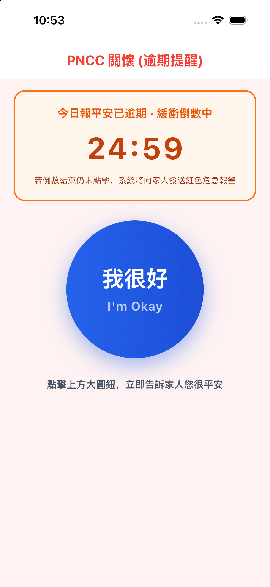
图 1.2：逾期未报平安状态（橙黄色倒计时大卡片）
1.2 傳統監控方案的三大心理崩潰點 (攝影機、電話查勤與求救鈴)
傳統長者監護方案往往由工程技術思維主導，忽視了長輩的心理自尊：
- 室內監控鏡頭： 在客廳或臥室安裝攝影機侵犯了長者的人格隱私。長輩覺得自己猶如犯人般被監視，常以毛巾覆蓋鏡頭或拔掉電源插頭。
- 每日例行打卡電話： 每天打電話只問「你有沒有吃藥？人還在嗎？」讓關心變成了臨床查勤，引發長輩的不耐煩與牴觸。
- 傳統求救手環/掛墜： 超過 70% 的求救按鈕被長輩鎖在抽屜裡，因為戴在身上如同向鄰里宣告自己是「體弱失能者」。

图 1.3：手机锁屏与桌面一目了然的报平安小组件
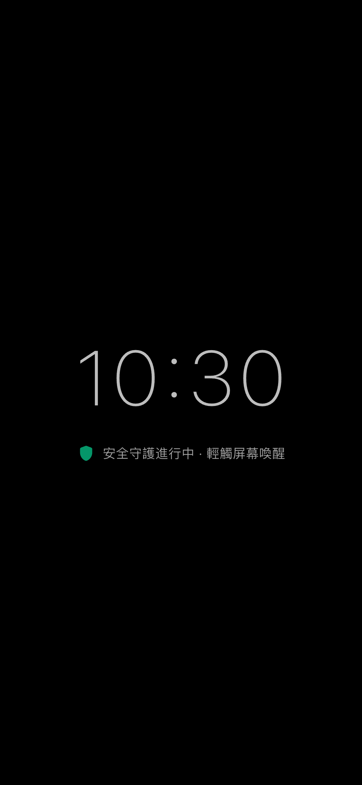
图 1.5：柔和护眼、防止误触的电子时钟屏保模式
1.3 『被動與主動的尊嚴平衡』核心指標與長者人因工程
PNCC 關懷確立了顛覆性的設計準則：報平安絕不應該是「被監控的負擔」，而是一場尊嚴、溫暖且毫不費力的晨間儀式，耗時不到 2 秒鐘。
我們針對長者生理退化進行了深度人因適配：
- 老花與黃斑部退化： 採用高對比度色彩標籤 (符合 WCAG AAA 7:1 對比標準) 與 48dp+ 巨型觸控卡片。
- 關節震顫與手指靈敏度下降： 消除小圖示按鈕，改以全寬卡片觸控與震動反饋。
- 認知挫折感 (軟體被困恐懼)： 打卡後 500 毫秒自動退回手機桌面，長輩永遠不會被困在複雜的選單中。
1.4 產品核心價值主張與三方共贏矩陣
PNCC 關懷為長輩、子女與社區志工帶來全方位的平衡價值：
| 利害關係人 | 核心價值主張 | 實質情感與生活改善 |
|---|
| 長者端 (Senior) | 零標籤感、零負擔的晨間平安確認 | 保有完整住家隱私與獨立自尊；享受每日聖經靈修陪伴。 |
| 家屬端 (Caregiver) | 多長輩即時儀表板與雙層預警緩衝 | 徹底告別終日擔憂的心理焦慮；以溫和確證取代奪命連環叩。 |
| 社區/教會志工 | 三秒掃碼配對與多重關懷圈協同 | 讓教會關懷團契與鄰里志工能夠建立多對一的守護網絡。 |
深入剖析 Flutter 核心、watchOS 原生手錶應用、Alexa 語音技能以及原生平台通道架構。
2.1 跨平台全端系統拓撲結構
PNCC 關懷採用模組化跨平台架構，結合原生平台通道與雲端微服務：
- 手機客戶端： 以 Flutter 3.x / Dart 3.x 為核心，採用 Provider 響應式狀態管理，相容 iOS 15.6+ 與 Android 8.0 至 Android 16。
- 穿戴裝置端： 採用原生 SwiftUI 建構的獨立 watchOS 應用，透過
WatchConnectivity 雙向同步。 - 智慧語音端： 部署於 AWS Lambda 的自訂 Amazon Alexa 語音技能 (Node.js ASK SDK v2)，整合 AWS Polly 神經語音。
- 雲端持久層： Google Cloud Firestore NoSQL 即時資料庫，具備 WebSocket 毫秒級快照監聽與 RBAC 安全規則。

图 2.1：iPhone 15 灵动岛上的平安状态小胶囊

图 2.2：安卓大平板自动适配布局
2.2 Apple Watch 獨立手錶伴侶架構 (watchOS)
Apple Watch 獨立手錶伴侶應用 (PNCCWatch Watch App) 具備雙重運作模式：
- 連線/離線雙重模式： iPhone 在藍牙範圍內時透過即時管道傳輸；外出散步或手機沒電時，手錶本地快取打卡紀錄，恢復連線後自動回補。
- WatchConnectivity 會話管理： 實作
WCSessionDelegate，打卡時封裝包含 UTC 時間戳記、電量與打卡來源的加密封包。 - HealthKit 背景授權： 配置
NSHealthShareUsageDescription 與 NSHealthUpdateUsageDescription，透過手錶感測生理步數與活動能量。
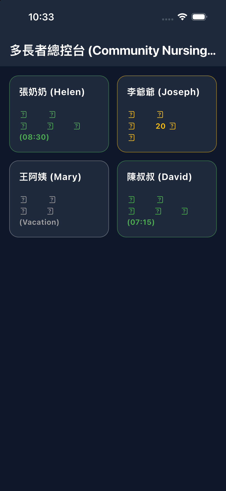
图 2.3：iPad 平板大屏幕分栏看管界面

图 2.4：苹果手表直接独立运行测试画面
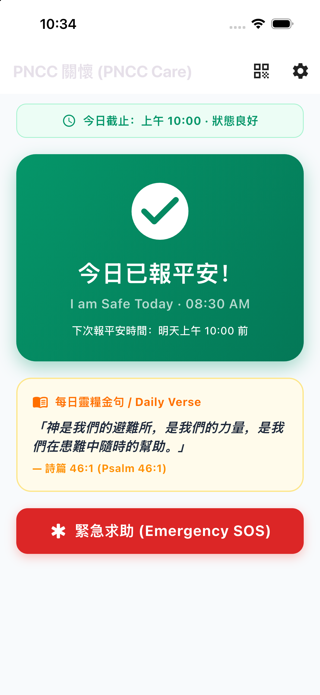
图 2.5：强光下也能看清的高对比度界面模式
2.3 Amazon Alexa 智慧語音技能架構
為臥床、行動不便或嚴重關節炎長者提供零接觸語音報平安：
- 雙語語音語意解析： 支援英文與自然中文語音指令 (「Alexa, tell Daily Notify I am okay」 / 「Alexa，跟 Daily Notify 說我很好」)。
- AWS Polly 智宇神經中文語音： 以 SSML 標籤調節語速與溫潤音調，回覆今日金句，如同家人隨侍在側。
- 六位數滾動加密配對： 長輩只需口述 6 位數字即可將音箱與家庭帳號綁定，免開電腦網頁授權。
2.4 安卓與蘋果原生平台通道 (Platform Channels)
深度呼叫作業系統底層硬體能力：
- Android Daydream 屏保 (
BibleDreamService.kt)： 呼叫系統屏保 API，充電時自動化身為護眼電子夜鐘。 - Android 系統廣播監聽： 監聽
ACTION_POWER_CONNECTED、ACTION_POWER_DISCONNECTED 與 ACTION_USER_PRESENT (螢幕解鎖)。 - iOS 即時動態 (
ActivityKitHelper.swift)： 在 iOS 16.1+ 靈動島與鎖定畫面上即時渲染倒數卡片。 - iOS App Group 共享記憶體 (
AppGroupHelper.swift)： 讓主程式、手錶延伸模組與桌面小工具共享即時資料。
坦承真實研發過程中的閃退事故、背景電源限制、虛擬導航列遮擋與數學計時模型設計。
3.1 挑戰一：App Store 瘦身腳本遺漏與啟動閃退復盤 (Build 22-25)
在 v1.1.4 上架審核通過後，使用者回報在 iPhone 13 上點擊圖示瞬間閃退。
根本原因復盤： 新增 Apple Watch Target 時，Xcode 專案檔 (project.pbxproj) 意外遺漏了 Flutter 瘦身與動態庫嵌入腳本 (xcode_backend.sh embed_and_thin)。導致打包出的 15.8 MB IPA 內部完全缺少 Flutter.framework 與 App.framework。iOS 動態鏈接器 (dyld) 啟動時找不到符號，直接終止應用 (image not found)。
終極解決方案： 我們在 project.pbxproj 的 Embed Watch Content 後方完整補回 Thin Binary 構建階段，設定 inputPaths = () 消除 Xcode 15 依賴循環警告，重新生成包含完整動態庫的 36.7 MB IPA，並在 iPhone 13 實機以 Release 模式驗證通過，版本遞增為 v1.1.5 (Build 25)。
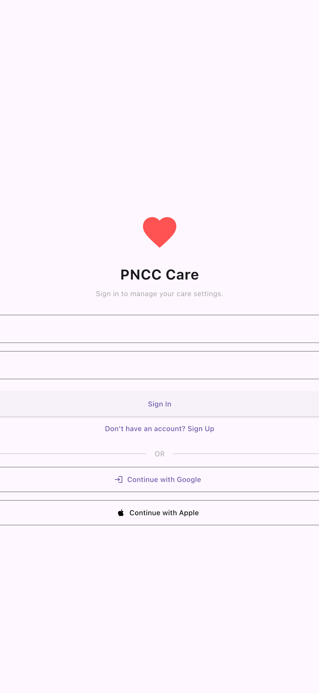
图 3.1：手机上刷脸或点一下就能登录的界面
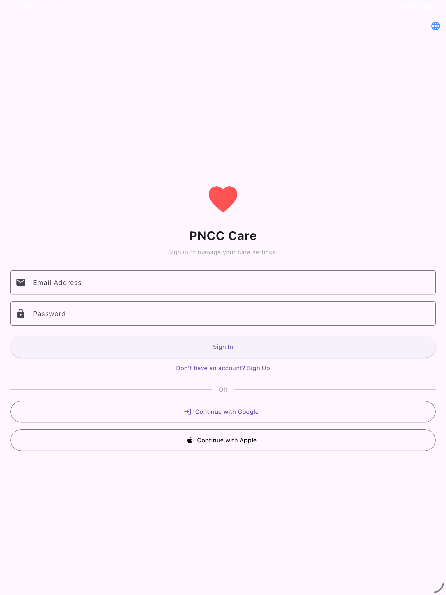
图 3.2：平板横屏登录大界面

图 3.3：苹果与谷歌一键快捷登录按钮
3.2 挑戰二：作業系統背景電源管理限制與保活機制
現代 iOS 與 Android 具備嚴格的背景凍結機制：
- iOS 背景任務預算： 結合
BGAppRefreshTask 與靜默 APNs 推播，配合 HealthKit 授權喚醒。 - Android Doze 模式與廠商白名單： 小米 MIUI 與華為 EMUI 常殺死背景進程。我們採用前台服務提示、電池最佳化豁免引導，並結合系統開關廣播被動喚醒。

图 3.4：父母与子女建立看护绑定的专属二维码界面
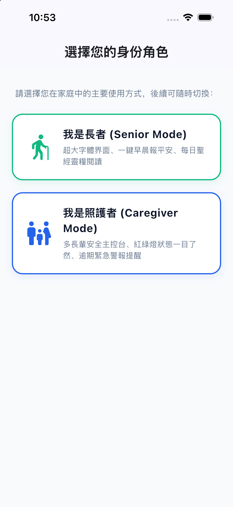
图 3.5：选身份界面（长者卡片与照料者卡片）
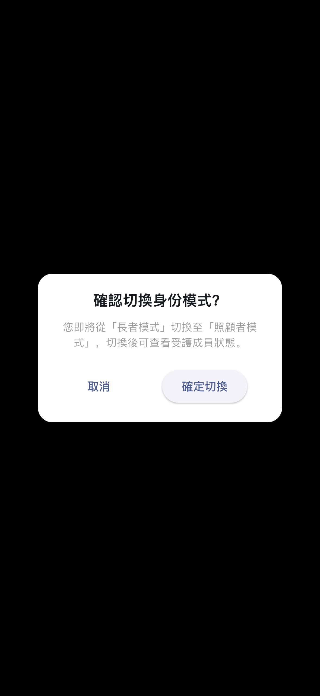
图 3.6：随时切换长者或照护者身份的确认弹窗
3.3 挑戰三：照護誤報危機與雙層階梯式計時器數學模型
頻繁的誤報是照護軟體被遺棄的頭號殺手。若長者只是午睡或買菜，系統就向子女手機發出刺耳警報，會造成狼來了效應。
我們研發了雙層安全計時器狀態轉移方程：
狀態(t) = 綠燈 (平安 Safe)， 當 t_now - t_last <= 計時器一
狀態(t) = 黃燈 (預警 Warning)，當 計時器一 < t_now - t_last <= 計時器一 + 計時器二
狀態(t) = 紅燈 (警報 Emergency)，當 t_now - t_last > 計時器一 + 計時器二
計時器一提供充分的日常寬容期 (預設 24 小時)；計時器二提供安靜的黃燈預警期 (預設 60 分鐘)。只有兩者皆耗盡時，才會觸發高分貝緊急警報。
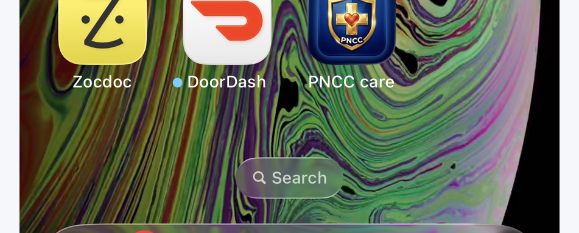
图 3.7：保护隐私的一键彻底注销账户按钮
3.4 挑戰四：老舊安卓機型虛擬三鍵底欄遮擋 (小米 Mi 9 適配)
許多長者使用小米 Mi 9 等具備傳統虛擬三鍵 (返回/主頁/多任務) 的手機。原先彈窗下方的確認按鈕常被系統導航列遮擋。
解法： 透過原生平台通道獲取真實 WindowInsets 數據，在全域彈窗引入動態 SafeArea 底部補償乘數，並支援橫向旋轉雙欄自適應佈局，保證在任何機型上皆 100% 完整顯示與點擊。
長輩首頁的單重視覺設計，以及六大多模態打卡途徑的詳細運作方式。
4.1 長輩首頁人因設計：48dp+ 整合大卡片與 500ms 自動退出
長輩首頁專注於單一無捲動視覺中心：
- 整合式巨型卡片： 平安狀態與「我很好」按鈕熔鑄為 48dp+ 醒目卡片，老花眼亦能看清。
- 500 毫秒自動退出： 按下後震動回饋並自動退回手機桌面，長輩絕不會被困在 App 中。
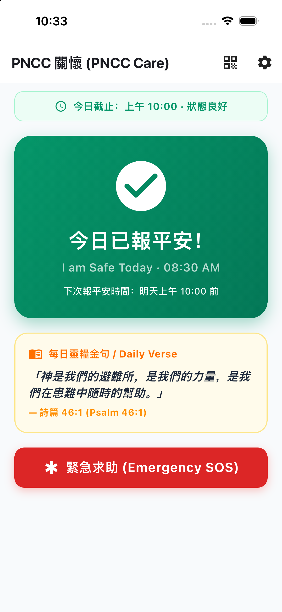
图 4.1：点完报平安后的翠绿色大卡片（表示今天一切安好）

图 4.2：iPad 大平板上的超大报平安界面
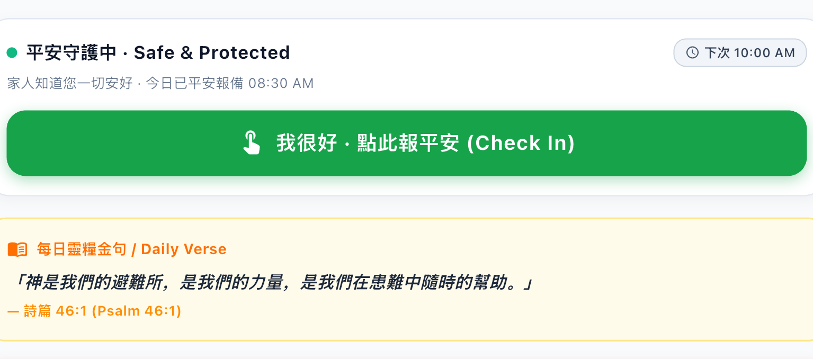
图 4.3：特写：超大、点着不费劲的绿色报平安卡片
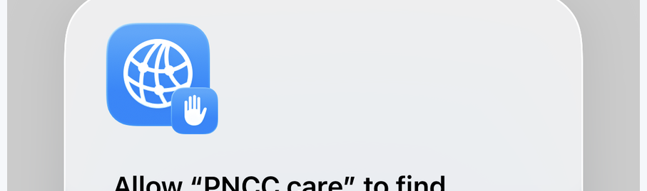
图 4.5：特写：提醒长者今天还剩多久该报平安的倒计时
4.2 六大報平安觸發管道詳細說明
| 觸發管道 | 硬體 / 平台 | 使用方式 | 系統技術反應與功能後果 |
|---|
| 1. 手機超大卡片一鍵打卡 | 蘋果與安卓手機/平板 | 開啟 App，點擊綠色大卡片。 | 重置計時器一與二，寫入 Firestore，更新桌面小工具，震動反饋並於 500ms 後自動縮小退出。 |
| 2. Apple Watch 手錶伴侶 | watchOS 9.0+ Series 4 ~ 10 / Ultra / SE | 手腕輕點「我很好 · I'm OK」。 | 透過 WatchConnectivity 發送加密封包給 iPhone；若 iPhone 不在身邊則手錶本地快取，連線後自動補傳。 |
| 3. Amazon Alexa 智慧語音 | Amazon Echo 智慧音箱系列 | 對音箱說：「Alexa，跟 Daily Notify 說我很好。」 | Echo 音箱連線 AWS Lambda，驗證 6 位數憑證，重置雲端計時器，Alexa 以中文智宇女聲回讀今日金句。 |
| 4. 床頭護眼電子鐘 (Daydream) | 舊手機/平板插上電源置於床頭 | 早晨醒來摸一下螢幕任意位置。 | 黑底護眼時鐘，觸摸螢幕任意位置退出時鐘並**自動完成今日打卡**！ |
| 5. 桌面小工具與即時動態 | iOS WidgetKit & Android AppWidget | 直接在手機桌面點擊綠色小工具按鈕。 | 小工具背景攔截點擊，本地即時變更為 Safe 並非同步上傳雲端，免開 App。 |
| 6. 跌倒重力衝擊感測 | 三軸加速度計與陀螺儀 | 被動守護。手機感測到劇烈撞擊。 | 手機發出警報聲並倒數 30 秒，長者未按「我沒事」撤銷時，自動向家屬發送跌倒警報。 |

图 4.4：特写：遇到困难时一键求助的红按钮
詳盡介紹設定畫面中的每一個開關、數值、計時器、滑桿及調整後的系統反應與功能後果。
5.1 安全計時器與休假配置詳解
| 設定項目 | 代碼 Key 與型別 | 可調範圍與預設值 | 詳細運作機制與功能後果 (Consequence) |
|---|
| 平安打卡週期 (計時器一) | checkInFrequency (int) | 60 至 2880 分鐘
(預設：1440m = 24小時) | 機制： 正常平安安全窗倒數。
後果： 計時器一歸零後，首頁狀態從綠燈轉為黃燈預警，向長輩手機發送打卡提醒。若設為 0 則關閉所有安全監測與警報。 |
| 警報逾時時限 (計時器二) | alertTimeout (int) | 0 至 720 分鐘
(預設：60分鐘寬限，或0) | 機制： 計時器一到期後的寬限緩衝期。
後果： 計時器二歸零後，狀態翻轉為紅燈緊急警報，向所有已綁定的家屬發送高優先級警報推播與橫幅。若設為 0 則計時器一到期立即報警。 |
| 休假 / 暫停監護模式 | pauseStartDate,
pauseEndDate (DateTime) | 日期範圍選擇器 (起訖日期) | 機制： 長輩出遊、返鄉或住院期間暫停監測。
後果： 暫停期間計時器凍結，不觸發黃燈與紅燈警報，家屬端顯示灰色「休假中」徽章。完全避免誤報干擾。 |
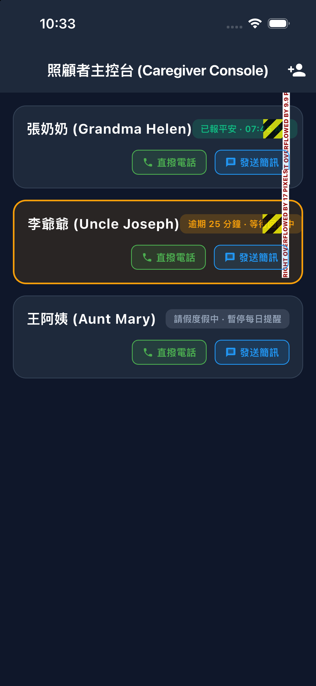
图 5.1：子女在手机上看爷爷奶奶今天平安没有的列表

图 5.2：iPhone 13 上随时查看多个长者安全状态

图 5.3：像红绿灯一样清楚的安全状态颜色指示
5.2 被動生活感測與硬體自動化
| 設定項目 | 代碼 Key 與型別 | 可選設定與預設 | 詳細運作機制與功能後果 (Consequence) |
|---|
| 充電狀態變動自動報平安 | enableBatteryActivityTracking (bool) | 開啟 / 關閉 (預設開啟) | 機制： 廣播接收器監聽插上或拔掉充電線動作。
後果： 長輩晚上睡前插上充電、或早晨拔掉充電線時，系統靜默視為一次有效活動並重置計時器！長輩完全不用開軟體。 |
| 解鎖螢幕自動報平安 | enableUnlockActivityTracking (bool) | 開啟 / 關閉 (預設開啟) | 機制： 監聽系統螢幕解鎖 (ACTION_USER_PRESENT) 事件。
後果： 長輩只要解鎖手機看照片、讀簡訊或聽語音，系統自動確認長者平安並重置安全計時器。 |
| Apple 健康 / Google 健身同步 | enableHealthActivitySync (bool) | 開啟 / 關閉 (預設關閉) | 機制： 讀取 HealthKit 或 Google Fit 步數與心率。
後果： 過去 1 小時內步數大於 100 步、或 Apple Watch 記錄到活動心率時，自動確認安全並更新最後活動時間。 |
| 跌倒撞擊靈敏度 | fallDetectionSensitivity (String) | 'high', 'medium', 'low'
(預設：'medium') | 機制： 設定加速度計重力衝擊閾值。
後果： 「高」在 1.8G 觸發，「標準」在 2.5G，「低」在 3.2G。偵測到撞擊後強制啟動 30 秒本機倒數取消窗，防止手機掉落地面造成誤報。 |
| 搖晃求助警報 | enableShakeToPanic (bool) | 開啟 / 關閉 (預設關閉) | 機制： 連續劇烈搖晃手機感測。
後果： 長輩突發心悸或遭受威脅時，用力搖晃設備 3 秒立即啟動 10 秒倒數，隨後發送求救警報並呼叫聯絡人。 |

图 5.4：iPad 大屏幕一次看护全社区多位老人的总控台

图 5.5：安卓平板上的多老人看护卡片网格
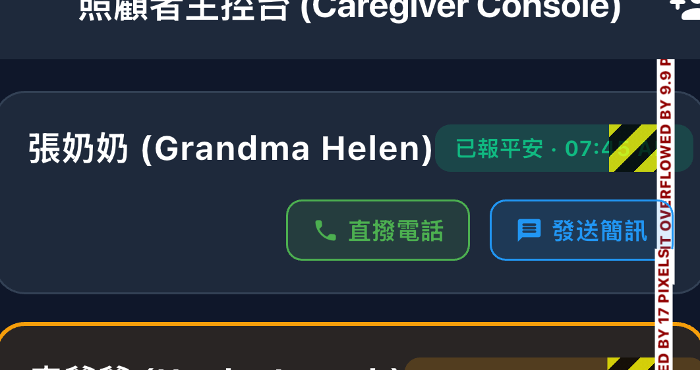
图 5.6：特写：显示今天具体几点几分打卡平安的长者卡片

图 5.7：特写：发现没报平安时，一键打电话或发短信的按钮
5.3 地理圍欄安全區域
| 設定項目 | 代碼 Key 與型別 | 可選設定 | 詳細運作機制與功能後果 (Consequence) |
|---|
| 啟用安全區域 | enableGeofencing (bool) | 開啟 / 關閉 | 機制： 背景 GPS 圓形地理圍欄監測。
後果： 長輩處於設定的安全區域（如家中）時自動放寬或暫停計時；若長者離開指定區域，恢復監測或通知家屬（防走失重要功能）。 |
| 安全區坐標 | safeZoneLatitude,
safeZoneLongitude (double) | 地圖選點器 / 目前 GPS | 後果： 設定安全區域中心點（如長輩住家）。 |
| 安全區半徑 | safeZoneRadius (double) | 50m, 100m, 200m, 500m | 後果： 設定防護範圍半徑。200 公尺半徑足以涵蓋長輩住家、前後院與庭院周遭。 |
5.4 語言譯本、外觀與照護者警報自訂
| 設定項目 | 代碼 Key 與型別 | 可選設定 | 詳細運作機制與功能後果 (Consequence) |
|---|
| 軟體介面語言 | appLocale (Locale) | 繁體中文 / 簡體中文 / 英文 | 後果： 改變按鈕、選單與說明文字語言。與聖經譯本完全解耦獨立。 |
| 聖經譯本 | bibleVersion (String) | 和合本 (CUV)
英文 NIV
英文 KJV | 後果： 決定每日金句與離線閱讀器語言。長輩看中文聖經，海外子女用英文介面，互不衝突。 |
| 打卡後自動縮小退出 | minimizeOnCheckIn (bool) | 開啟 / 關閉 (預設開啟) | 後果： 開啟時點擊打卡 500ms 後自動返回手機桌面；關閉時保持留在長輩首頁。 |
| 照護者警報橫幅脈衝閃爍 | enableCaregiverAlertFlashing (bool) | 開啟 / 關閉 (預設開啟) | 後果： 紅燈時橫幅持續呼吸閃爍以加強警示；關閉時呈現靜態紅底。 |
| 即時動態 (iOS 靈動島) | liveActivityShowNormal,
liveActivityShowExpired (bool) | 平時顯示 / 逾時顯示開關 | 後果： 決定鎖定畫面是否在安全平時持續常駐倒數，或僅在黃燈/紅燈逾時時才彈出提示。 |
非技術長輩與家屬的圖文操作指引：無密碼登入、動態角色轉換與 AES 加密二維碼配對教學。
6.1 無密碼登入與身分管理
安裝後即可開始使用，完全不需要技術經驗：
- 下載安裝： 於蘋果 App Store 搜尋「PNCC care」，或安卓下載「app-release.apk」安裝。
- 選擇登入方式： 蘋果用戶點擊黑色 Apple 按鈕透過 Face ID 瞬間登入；安卓用戶直接選 Google 帳號。
- 隨時更換帳號： 點擊右上角設定圖示 (⚙️)，滑至底部點擊「登出」即可更換。

图 6.1：各项简单好懂的功能设置菜单总览
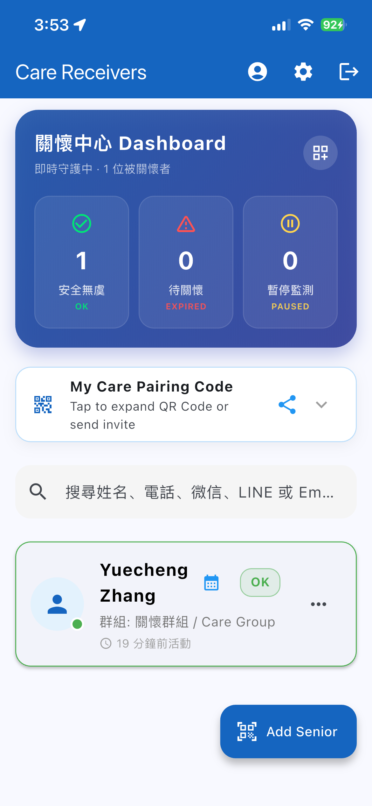
图 6.3：真机上清晰明了的设置菜单滑动界面

图 6.4：iPad 左边挑选项、右边改设置的双栏界面

图 6.6：改完立即生效的 iPad 全能设置页面
6.2 三大身分角色與免重新登入動態切換
三種為不同世代量身定制的模式：
- 長輩模式 (Senior)： 超大卡片、每日靈修、床頭夜鐘。
- 照護者模式 (Caregiver)： 看護儀表板、燈號與緊急撥號。
- 雙向模式 (Dual Mode)： 同時報平安與看護父母。
切換步驟： 開啟設定 (⚙️) → 滑至底部「切換身分模式 (⇄)」→ 點選目標模式，畫面立刻重構，免重新登入！
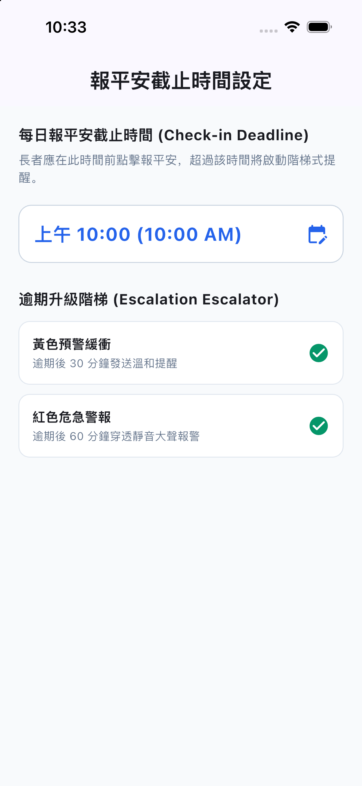
图 6.2：设置几点算迟到、等多久发提醒的设置界面
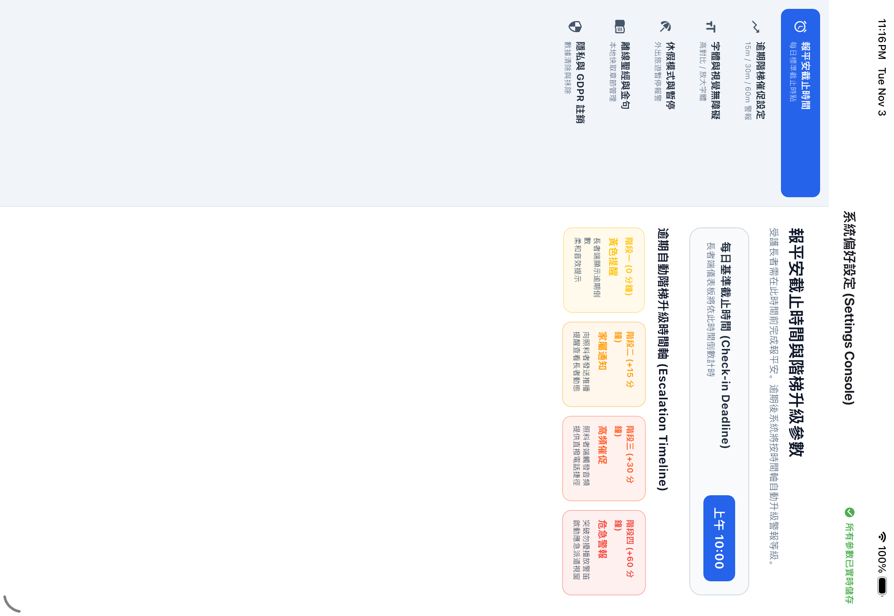
图 6.5：横向大平板设置窗口
图 6.7：特写：上下滑动选择每天最晚几点报平安的滚轮
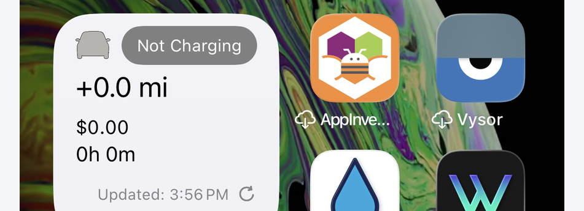
图 6.8：特写：迟到多久给子女发黄色提醒和紧急红警报的选项
6.3 建立關懷關係：三秒動態 AES QR Code 掃碼配對
- 長輩手機端： 開啟設定 → 點選 「我的照護者」，螢幕呈現專屬加密 QR Code。
- 子女手機端： 進入照護者儀表板 → 點擊右下角藍色圓形 「+」 號 → 點擊 「掃描 QR Code」。
- 對準掃描： 對準長輩螢幕掃描，長輩卡片立刻出現在子女儀表板上！多位兒女可重複掃描同一張二維碼組成關懷圈。
图 6.9：特写：把全屏幕所有字一键变巨大的字号滑块
實戰指南：照護者面對綠燈、黃燈、紅燈、跌倒警報與離線時的標準處置流程與通訊禮儀。
7.1 五大即時狀態應變處置標準流程 (Clinical SOP)
| 即時狀態燈號 | 視覺特徵 | 狀態解讀 (What it means) | 照護者應變處置標準流程 (Clinical SOP) |
|---|
| 狀態一：綠燈 · 平安中 | GREEN | 長輩在安全週期內打卡完畢。 | 完全放心！子女無須打擾長輩。可點擊快捷圖示發送溫馨祝福簡訊。 |
| 狀態二：黃燈 · 預警期 | AMBER | 計時器一到期，進入寬限緩衝。長輩可能睡晚、洗澡或散步中。 | **切勿慌張**。發送一般問候短訊或打通電話：「媽媽早安，今天精神好嗎？」 |
| 狀態三：紅燈 · 逾時警報 | RED | 雙層計時器皆耗盡，長者完全失聯。 | 1. 立即點擊電話圖示緊急呼叫長輩。
2. 致電同住鄰居、社區管理室或附近親友。
3. 啟動緊急到府訪視程序。 |
| 狀態四：紅燈 · 跌倒警報 | RED | 感測到重力撞擊，且 30 秒內未被手動取消。 | 第一時間撥通電話確認神智；若無法取得聯繫，請立即通報 119/911 或請就近親友馳援。 |
| 狀態五：灰燈 · 休假中 | GREY | 長輩正處於出遊或住院設定期內。 | 系統暫停計時與發報，免除假警報干擾，安心陪伴長輩度假。 |

图 7.1：不用开软件、在手机锁屏上就能点报平安的小组件
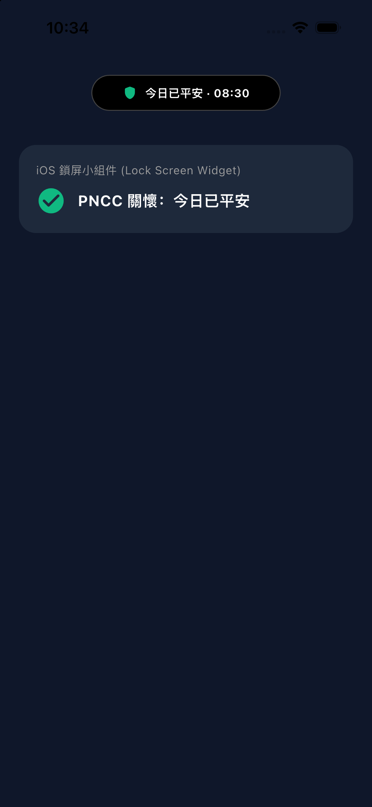
图 7.2：手机屏幕顶部灵动岛上的绿色平安小圆标
深入分析手機斷電、飛航模式、劇烈摔機、免打擾模式等極端邊界條件下的韌性架構。
8.1 FMEA 矩陣與自我修復機制
| 異常失效模式 | 潛在影響 | 系統偵測機制 | 系統緩解與韌性修復機制 |
|---|
| 長輩手機完全沒電關機 | 無法傳送打卡訊號。 | 雲端排程偵測逾期未打卡。 | 進入黃燈預警，照護者端標註「設備離線/電量耗盡可能」。 |
| 長者身處無收訊山區 | 即時封包延遲。 | 本地 SQLite 隊列暫存打卡紀錄。 | 具備時間戳記校驗，恢復網路後自動補傳，雲端回溯補齊安全紀錄。 |
| 手機不慎掉落地面 | 可能引發跌倒誤報。 | 本地 30 秒高分貝警報倒數。 | 長者只需在 30 秒內點擊「我沒事」，警報被撤銷，絕不驚擾子女。 |
| 家屬手機開啟「勿擾模式」 | 重要緊急警報被靜音。 | Apple APNs 關鍵警報 (Critical Alerts) 與 Android 高優先級通道。 | 紅燈與跌倒警報具備穿透系統靜音開關權限，確保緊急時刻必能喚醒家屬。 |

图 8.1：手机屏幕顶端跳出来的紧急求助黄色/红色大提醒
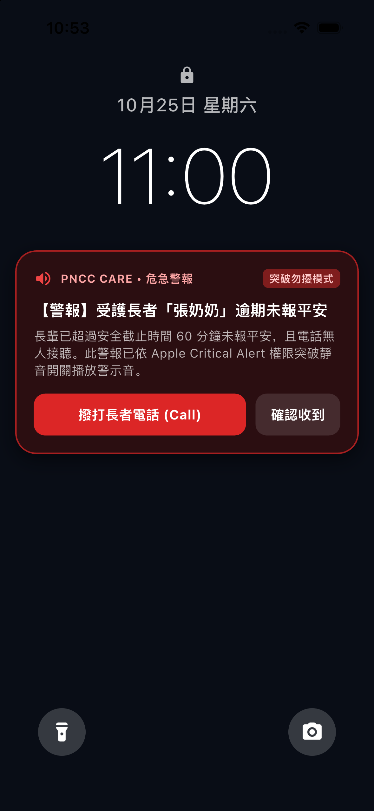
图 8.2：即使手机开了静音也一样能响铃叫醒家人的求救报警
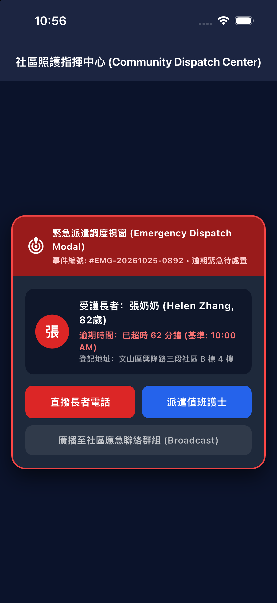
图 8.3：平板上跳出的醒目求救弹窗与定位信息
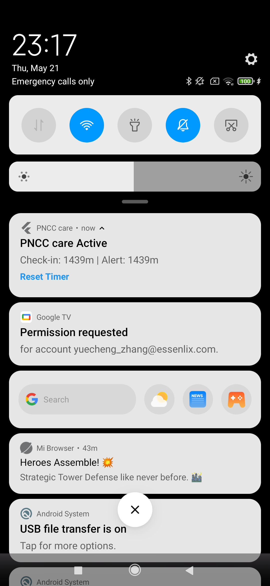
图 8.4：安卓手机上的置顶紧急救援消息通知
將照護與靈性平安結合：打破醫療衰老標籤，建立喜樂感恩的晨間規律。
9.1 靈修陪伴對長輩心理健康的深遠影響
若長者軟體只有血壓、藥丸與病歷，長輩會感到自己被物化為病人。透過每日優美金句，長輩晨起打卡成為一次充滿感恩與喜樂的心靈儀式，長者樂於主動打開軟體。

图 9.1：家里没网也能先记录、联网后自动补发报平安的机制

图 9.2：锁屏直接打卡，省电又省流量的操作方式
9.2 100% 離線章節閱讀器與雙軌譯本支援
點擊金句卡片可開啟離線聖經章節閱讀器：
- 純離線資料庫： 無網路環境下仍可全文查閱舊約與新約全書。
- 多譯本切換： 繁簡和合本 (CUV)、英文 NIV、英文 KJV。
- 字體自由縮放： 支援大字號無級縮放，保護高齡長者視力。
坦承當前技術限制，展望結合電信 PSTN 自動外呼、60GHz 毫米波無感雷達與獨立手錶雲連線之宏偉願景。
10.1 當前實作邊界
- 遠距同步依賴網路： 本地打卡、聖經閱讀、跌倒感測與床頭夜鐘皆可 100% 離線運作，但向遠方子女儀表板同步仍需要長輩手機連上 Wi-Fi 或行動網路。
- 語音智慧音箱依賴硬體： Alexa 語音打卡需配合 Amazon Echo 設備或 Alexa App。
- 蘋果系統背景電源排程： iOS 在未開啟體能訓練模式下，背景感測器與常駐執行緒受蘋果電源管理調度約束。

图 10.1：戴在手腕上的苹果手表：一抬手就能看到自己很平安

图 10.2：手表上的红色紧急求救卡片（摔倒或难受时点这里）

图 10.4：特写：防止不小心碰到的手表长按二次确认报警
10.2 未來 24 個月演進願景 (Roadmap)
- 電信自動語音電話與簡訊回退 (PSTN Call Fallback)： 若家屬手機離線或未安裝 App，當紅燈警報觸發時，雲端伺服器在紅燈觸發時將自動外撥真實行動電話語音通知家屬。
- Matter / 60GHz 毫米波雷達無感偵測： 整合無鏡頭之毫米波雷達，被動感測長者下床走動與呼吸起伏，徹底實現「連螢幕都不用摸」的極致被動平安感知。
- AI 生物節律規律異常早期偵測： 機器學習演算法學習長輩起床打卡的生物節律；若長輩平時皆在 7:30 打卡，某日過 9:00 仍未動作，提前以溫和方式提醒。
- Apple Watch 獨立蜂巢網路雲同步： 支援 Apple Watch LTE 獨立直連 Firebase 雲端，外出散步免隨身帶 iPhone 即可實現全球即時通訊。